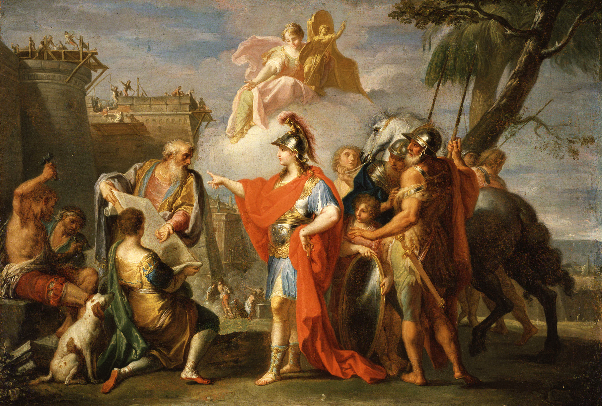

<!DOCTYPE html>
<html lang="en">
<head>
    <meta charset="UTF-8">
    <meta name="viewport" content="width=device-width, initial-scale=1.0">
    <title>Historical Events Quiz</title>
    <script src="https://cdn.jsdelivr.net/npm/chart.js"></script>
    <script src="https://cdnjs.cloudflare.com/ajax/libs/jstat/1.9.4/jstat.min.js"></script>
</head>
<body>
</body>
</html>

<script>
    const eventsList = `0.10 Hipparchus (the brother of the Athenian tyrant Hippias) was assassinated by Harmodius and Aristogeiton over a love quarrel in ##514## BC, the latter of whom later became national heroes for being 'tyrannicides'
0.20 The rape of Lucretia and the resulting expulsion of Superbus from Rome occurred in ##510## BC
0.20 Cleisthenes reformed the Athenian political system so that it resembled democracy in ##508## BC
0.60 The battle of Thermopylae (during the Greco-Persian Wars) was fought in ##480## BC
0.20 'Oedipus Rex' was first performed around ##429## BC
0.25 Socrates died in ##399## BC
0.10 The battle of Aegospotami (the last, decisive naval battle of the Peloponnesian War) was fought in ##405## BC
0.30 Aristotle was born in ##384## BC
0.10 The Corinthian War was fought between the Spartans and an alliance including Thebes, Athens, Corinth and Argos from ###395### BC until ###387### BC
0.10 The Battle of Leuctra between the Spartans and the Thebans was fought in ##371## BC
0.20 Plato died in ##348## BC
0.70 Alexander the Great was born in ###356### BC and died in ###323### BC
0.20 Thebes was sacked by Alexander in ##336## BC
0.30 The Battle of Gaugamela took place in ##331## BC, resulting in the conquest of the Achaemenid Empire by Alexander
0.30 Alexandria (the famous one in Egypt) was founded by Alexander in ##331## BC
0.10 The sinking of the Roman fleet in a storm in the Strait of Sicily during the First Punic War occurred in ##255## BC
0.10 The Battle of the Aegates (the final, decisive naval battle of the First Punic War) was fought in ##241## BC
0.50 The Battle of Cannae (during the Second Punic War) was fought in ##216## BC
0.10 The Battle of Ilipa, considered by many to be Scipio Africanus's most brilliant military victory, was fought during the Second Punic War in ##206## BC
0.10 The *other* battle of Thermopylae (during the Roman-Seleucid War) was fought in ##191## BC
0.40 The sacking of Carthage (the resolution of the Third Punic War) occurred in ##146## BC
0.10 The Battle of the Colline Gate, the decisive battle of Lucius Cornelius Sulla's Roman civil war, was fought just outside Rome in ##82## BC. Sulla was the first Roman general to march on Rome and the first citizen of the Roman Republic to seize power by force.
0.10 Pompey annexed Syria as a Roman province in ##64## BC, bringing a final end to the Seleucid Empire
0.80 Julius Caesar was born in ###100### BC and was assassinated in ###44### BC
0.80 Caesar invaded Britain for the first time in ##55## BC
0.60 Caesar crossed the Rubicon in ##49## BC
0.60 The Battle of Actium took place in ##31## BC
0.60 Mark Antony and Cleopatra VII committed suicide in ##30## BC
0.50 Augustus Caesar died in ##14## AD
0.10 The financial crisis in the Roman Empire during the reign of Tiberius occurred in ##33## AD
0.40 Nero was emperor from ###54### AD to ###68### AD
0.75 Vesuvius erupted in ##79## AD, destroying Pompeii
0.30 The period of the Five Good Emperors of Rome lasted from ###96### AD (with the accession of Nerva) until ###180### AD (with the end of the Pax Romana)
0.30 The construction of Hadrian's Wall began in ##122## AD
0.20 The Antonine Plague began in ###165### AD and ended in ###180### AD
0.25 Commodus was assassinated by the wrestler Narcissus in ##192## AD
0.10 Roman Emperor Severus Alexander was assassinated by his own troops in ##235## AD, kickstarting the Crisis of the Third Century
0.20 The Aurelian Wall was completed in ##273## AD
0.30 Diocletan, whose reign as emperor over the Roman Empire marked the end of the Crisis of the Third Century in ###284### AD, abdicated in ###305### AD and became a vegetable farmer
0.50 Roman Emperor Constantine officially converted to Christianity in ##312## AD
0.40 Christianity became the state religion of the Roman Empire in ##380## AD when Emperor Theodosius I issued the Edict of Thessalonica
0.60 The sack of Rome by the Visigoths occurred in ##410## AD
0.30 Attila the Hun died in ##453## AD
0.20 Boethius was executed in ##524## AD
0.40 The plague of Justinian began in Roman Egypt in ##541## AD
0.20 The Lombards entered Italy for the first time in ##568## AD under Alboin
0.50 The Muslim conquest of the Iberian Peninsula began in ##711## AD when forces under Tariq ibn Ziyad landed at Gibraltar
0.40 The Battle of Tours was fought in ##732## AD during the Umayyad invasion of Gaul
0.50 Charlemagne was born in ###748### AD and died in ###814### AD
0.30 The Treaty of Verdun was signed in ##843## AD
0.30 Otto the Great became the first Holy Roman Emperor in ##962## AD
0.60 The manuscript of Beowulf, the Nowell Codex, was produced around ##1000## AD
0.40 The Great Schism between the Latin Catholic and the Eastern Orthodox Churches occurred in ##1054## AD
0.90 William the Conqueror conquered England in ##1066## AD
0.30 Toledo (Spain) was conquered by Alfonso VI of Leon in ##1085## AD as part of the Reconquista
0.40 The Siege of Jerusalem ended the First Crusade (successfully) in ##1099## AD
0.20 The Concordat of Worms between Pope Callixtus II and Emperor Henry V ended the Investiture Controversy in ##1122## AD
0.80 King John of England agreed to the Magna Carta in ##1215## AD
0.30 Thomas Aquinas died in ##1274## AD
0.40 Dante was born in ###1265### AD and died in ###1321### AD
0.30 The Siege of Acre took place in ##1291## AD
0.30 Petrarch was born in ###1304### AD and died in ###1374### AD
0.40 Marco Polo died in ##1324## AD
0.60 The Hundred Years' War between England and France was fought between ###1337### AD (when Philip VI of France confiscated Gascony, precipitating the Edwardian War) and ###1453### AD (when the English were defeated in Aquitaine in the final battle of the Lancastrian War)
0.70 The Black Death began in ##1346## AD
0.10 The War of Chioggia between Venice and Genoa concluded in ##1381## AD with the Peace of Turin
0.20 The Medici Bank was created in ###1397### AD and fell in ###1494### AD
0.50 Chaucer died in ##1400## AD
0.60 The modern printing press was invented by Gutenberg in around ##1440## AD
0.70 Da Vinci was born in ###1452### AD and died in ###1519### AD
0.80 The fall of Constantinopole to the Ottomans happened in ##1453## AD
0.30 The signing of the Treaty of Lodi (which put an end to the Wars in Lombardy between Venice and Milan) and the founding of the Italic League that was to last the following 40 years (effectively until the death of Lorenzo de' Medici) took place in ##1454## AD
0.60 The Wars of the Roses were fought between ###1455### AD and ###1487### AD
0.70 Isabella I of Castile and Ferdinand II of Aragon were married in ##1469## AD
0.70 Michelangelo was born in ###1475### AD and died in ###1564### AD
0.70 The Spanish Inquisition was founded in ##1478## AD
0.30 The Pazzi conspiracy, an attempt to assassinate Lorenzo and Giuliano de' Medici and oust the Medicis as the rulers of Florence, took place in ##1478## AD
0.40 Lorenzo de' Medici died in ##1492## AD
0.90 Columbus made landfall in the Americas in ##1492## AD
0.80 The Kingdoms of Castile and Aragon conquered the Emirate of Granada in ##1492## AD, completing the Reconquista and founding modern Spain
0.20 Ludovico Sforza was the Duke of Milan from ###1494### AD until the Venetians, who were allied with Louis XII of France, invaded Milan in ###1499### AD during the Second Italian War, shortly after Ludovico had fled to Innsbruck
0.20 Charles VIII's Italian War (or the First Italian War after the period of Italic peace that coincided with the heyday of the Italian Renaissance) opened in ##1494## AD when Charles VIII of France, who disputed the succession of Alfonso II of Naples, invaded Italy in order to enforce his claims on the Neapolitan kingship
0.80 Martin Luther's 'Ninety-Five Theses' was written in ##1517## AD
0.60 Magellan's crew circumnavigated the globe in ##1522## AD
0.50 Machiavelli's 'The Prince' was published in ##1532## AD
0.70 Henry VIII had his first marriage (to Catherine of Aragon) annulled in ##1533## AD, precipitating the suppression of Catholicism in England (the Church of England had split off from the Catholic Church two years prior)
0.60 Copernicus's book 'De revolutionibus orbium coelestium' was published in ##1543## AD
0.50 The Council of Trent was held between ###1545### AD and ###1563### AD
0.40 Charles V (Holy Roman Emperor) abdicated in ##1556## AD, splitting up his possessions between the Spanish Habsburgs (headed by his son Phillip II of Spain) and the Austrian Habsburgs (headed by his brother Ferdinand); he then retired to the Monastery of Yuste and died there a year later
0.20 The 'Tametsi', a piece of legislation by the Catholic Church declaring that all marriages had to be witnessed by a priest, went into force in ##1563## AD
0.20 The Battle of Saint-Quentin (during one of the innumerable Italian Wars between France and Spain) took place in ##1557## AD
0.80 Elizabeth I of England succeeded to the throne in ##1558## AD
0.70 Galileo was born in ###1564### AD and died in ###1642### AD
0.80 Shakespeare was born in ###1564### AD and died in ###1616### AD
0.60 The Battle of Lepanto between the Holy League and the Ottoman Empire, the last major Western naval battle to be fought almost entirely between rowing vessels, took place in ##1571## AD
0.30 The sack of Antwerp (during the Eighty Years' War) took place in ##1576## AD, and marked the beginning of Antwerp's decline and Amsterdam's rise in importance
0.50 The Gregorian calendar went into effect in ##1582## AD
0.30 The English expedition in support of Dutch rebellion against Spanish Habsburg rule which kickstarted the Anglo-Spanish War happened in ##1585## AD
0.90 The first Spanish Armada which Phillip II of Spain sent in an attempt to invade England was in ##1588## AD
0.50 The English Armada (or the Counter-Armada) was sent by Elizabeth I in retaliation against the first Spanish Armada in ##1589## AD
0.30 The Treaty of London, which concluded the Anglo-Spanish War on peaceful terms, was signed in ##1604## AD
0.60 The first part of 'Don Quixote' was published in ##1605## AD
0.80 The Gunpowder Plot (in which Guy Fawkes and other Catholic associates conspired to blow up the Parliament of England) was discovered in ##1605## AD
0.20 The first dictionary for what is now standard Italian was published in ##1612## AD
0.70 The Thirty Years' War began in ###1618### AD and ended in ###1648### AD with the Peace of Westphalia
0.70 The English Civil War began in ##1642## AD
0.70 Issac Newton was born in ###1642### AD and died in ###1727### AD
0.60 Louis XIV of France became King of France in ###1643### AD and died in ###1715### AD; his reign is the longest recorded of any sovereign
0.20 The Fronde, a series of civil conflicts in France which concluded in the decline of the aristocracy in France's internal power balance and the emergence of absolute monarchy, took place between ###1648### AD (with the beginning of the Parlementary Fronde) and ###1653### AD (with the end of the Fronde of the Princes)
0.80 The execution of Charles I in the Second English Civil War occurred in ###1649### AD; the Stuart Restoration was in ###1660### AD. The period in between included the First and Second Commonwealths of England.
0.20 The Treaty of the Pyrenees, which concluded the Franco-Spanish War, was signed in ##1659## AD
0.90 The Great Fire of London occurred in ##1666## AD
0.40 The Franco-Dutch War took place between ###1672### AD and ###1678### AD
0.70 J. S. Bach was born in ###1685### AD and died in ###1750### AD
0.50 The Nine Years' War between France and the Grand Alliance took place between ###1688### AD and ###1697### AD
0.50 Charles II of Spain died in ##1700## AD, kickstarting the War of Spanish Succession
0.40 The Treaty of Union (which united the Kingdoms of England and Scotland to create Great Britain) was signed in ##1706## AD
0.60 The Treaty of Utrecht (which ended the War of Spanish Succession) was signed in ##1713## AD
0.30 Edward Teach (better known as Blackbeard) died in ##1718## AD
0.50 The South Sea Bubble collapsed in ##1720## AD
0.30 Bach wrote 'St. Matthew's Passion' in ##1727## AD
0.40 Casanova was born in ###1729### AD and died in ###1798### AD
0.50 The Treaty of Aix-la-Chapelle, which ended the War of Austrian Succession, was signed in ##1748## AD
0.60 Samuel Johnson's English dictionary appeared in ##1755## AD
0.50 The Great Lisbon Earthquake occurred in ##1755## AD
0.80 Mozart was born in ###1756### AD and died in ###1791### AD
0.60 Voltaire published 'Candide' for the first time in ##1759## AD
0.40 The problem of longitude was resolved by John Harrison's fourth chromometer in ##1761## AD
0.40 Bayes' theorem was published for the first time by Bayes in ##1763## AD
0.70 The Treaty of Paris, which ended the Seven Years' War (between two European alliances, one led by Great Britain and Prussia and the other by France) was signed in ##1763## AD, forcing France to cede many of its colonial possessions
0.50 James Cook made landfall in Australia and New Zealand in ##1769## AD
0.80 Beethoven was born in ###1770### AD and died in ###1827### AD
0.60 Goethe published the first edition of 'The Sorrows of Young Werther' in ##1774## AD
0.90 American independence occurred in ##1776## AD
0.70 Adam Smith published 'The Wealth of Nations' in ##1776## AD
0.50 The Watt steam engine design was published in ##1776## AD
0.50 Gauss was born in ###1777### AD and died in ###1855### AD
0.40 'Le Mariage de Figaro' by Beaumarchais premiered in ##1778## AD
0.40 The power loom was invented by Edmund Cartwright in ##1785## AD
0.60 Mozart and Da Ponte's opera 'Don Giovanni' premiered in ##1787## AD
0.50 'Critique of Practical Reason' was published by Kant in ##1788## AD
0.90 The Estates General of ##1789## AD began the French Revolution
0.90 In ##1793## AD Louis XVI of France was executed (as part of the French Revolution)
0.90 Napoleon was born in ###1789### AD and died in ###1821### AD
0.75 Edward Jenner demonstrated the first smallpox vaccine in ##1796## AD
0.40 Venice fell to Napoleon in ##1797## AD
0.80 Napoleon's coup to overthrow the French government occurred in ##1799## AD
0.70 The Rosetta stone was discovered in ##1799## AD
0.60 Alessandro Volta invented the first battery in ##1800## AD
0.60 In ##1801## AD the first census of London was taken which showed that it had just surpassed 1 million inhabitants, the first city to do so since Ancient Rome
0.75 The Louisiana Purchase occurred in ##1803## AD
0.65 In ##1804## AD the first steam train began operation
0.80 The Battle of Austerlitz (during the Napoleonic Wars) was fought in ##1805## AD
0.85 The Battle of Trafalgar was fought in ##1805## AD
0.70 Beethoven composed his Fifth Symphony in ##1808## AD
0.70 The Battles of Dresden and Leipzig (during the Napoleonic Wars) were fought in ##1813## AD
0.80 Jane Austen published Pride and Prejudice in ##1813## AD
0.90 The Battle of Waterloo was fought in ##1815## AD
0.65 The Year Without a Summer, caused by a volcanic eruption, occurred in ##1816## AD (the year that Mary Shelley, Percy Shelley, Polidori and Lord Byron got stuck in a house together over a very cold winter and had a competition to write the best horror story, which competition led to Frankenstein)
0.70 In ##1829## AD Robert Peel founded the Metropolitan Police Service in London
0.70 The July Revolution (or the Second French Revolution) in which Louis Philippe I was established occurred in ###1830### AD; Louis Philippe was overthrown in the February Revolution in ###1848### AD, leading to the Second French Republic
0.60 The Reform Act (reforming rotten boroughs) passed in English Parliament in ##1832## AD
0.65 Charles Babbage proposed the Analytical Engine in ##1837## AD
0.65 Telegraphy was patented in ##1837## AD
0.85 Queen Victoria was coronated in ###1837### AD and died in ###1901### AD
0.80 Charles Dickens published 'Oliver Twist' in ##1837## AD
0.65 The First Opium War was fought between ###1839### AD and ###1841### AD
0.65 Claude Monet was born in ###1840### AD and died in ###1926### AD
0.60 The word 'dinosaur' was coined in ##1841## AD
0.60 Anesthesia was used for the first time in surgery in ##1842## AD
0.85 The Great Irish Famine occurred between ###1845### AD and ###1852### AD
0.85 'The Communist Manifesto' was published by Marx and Engels in ##1848## AD
0.70 The Great Exhibition of London occurred in ##1851## AD
0.75 The Crimean War was fought between ###1853### AD and ###1856### AD
0.90 Darwin's 'On the Origin of Species' was published in ##1859## AD
0.85 The Kingdom of Italy was formed in ##1861## AD to consolidate the states of the Italian peninsula following the Risorgimento
0.75 Victor Hugo's 'Les Miserables' was first published in ##1862## AD
0.70 The first section of the London Underground opened in ##1863## AD
0.85 Mendeleev created the periodic table in ##1869## AD
0.80 The Suez Canal opened in ##1869## AD
0.80 Gandhi was born in ###1869### AD and died in ###1948### AD
0.85 The Franco-Prussian War was fought between ###1870### AD and ###1871### AD
0.85 The German Reich was officially established in ##1871## AD
0.70 The first public group exhibition by the group of artists that would later be known as the Impressionists opened in ##1874## AD
0.80 The first telephone call was made in ##1876## AD
0.70 Paris laid in the first electric street lamps (arc lamps) in ##1878## AD
0.90 Albert Einstein was born in ###1879### AD and died in ###1955### AD
0.80 Pasteur created his rabies vaccine in ##1885## AD
0.75 The first Sherlock Holmes story (A Study in Scarlet) was published in ##1887## AD
0.85 The Eiffel Tower was inaugurated in ##1889## AD
0.75 New Zealand became the first country to enact women's suffrage in ##1893## AD
0.80 Oscar Wilde was tried for homosexuality in ##1895## AD
Rontgen reported the discovery of X-rays in ##1895## AD
0.85 In ##1898## AD the Curies discovered polonium and radium
0.75 The Second Boer War began in ###1899### AD and ended in ###1902### AD
0.85 The Wright Flyer was flown for the first time in ##1903## AD
0.85 Einstein's Annus Mirabilis was in ##1905## AD
0.75 The South Pole was attained by Roald Amundsen in ##1911## AD
0.90 Titanic sank in ##1912## AD
0.95 World War I began in ###1914### AD and ended in ###1918### AD
0.85 The Battle of the Somme in WWI took place in ##1916## AD
0.90 The Treaty of Versailles was signed in ##1919## AD
0.85 The Spanish influenza (the one during the 20th century) was in ##1918## AD
0.85 Mussolini became prime minister of Italy in ##1922## AD
0.75 'Mrs Dalloway' was published by Virginia Woolf in ##1925## AD
0.85 Alexander Fleming postulated the existence of penicillin in ##1928## AD
0.90 The Wall Street stock market crash that began the Great Depression occurred in ##1929## AD
0.70 Godel announced his incompleteness theorem in ##1930## AD (he published it a year later)
0.95 Hitler became chancellor of Germany in ##1933## AD
0.75 Turing's proof of the undecidability of the halting problem was published in ##1937## AD
0.95 World War II began in ###1939### AD and ended in ###1945### AD
0.90 Hitler's Germany occupied the Low Countries and then Paris during WWII in ##1940## AD
0.90 Operation Barbarossa, in which Hitler made his first advances against the Soviet Union in WWII, occurred in ##1941## AD
0.85 The Allied invasion of Sicily during WWII occurred in ##1943## AD
0.95 D-day in WWII occurred in ##1944## AD
0.90 The United Nations was formed in ##1945## AD
0.85 British rule in India ended in ##1947## AD
0.90 Israel was founded in ##1948## AD
0.85 Orwell's '1984' was published in ##1949## AD
0.90 The structure of DNA was determined in ##1953## AD
0.85 Mount Everest was ascended for the first time in ##1953## AD
0.90 The first artificial Earth satellite (Sputnik 1) was launched in ##1957## AD
0.75 The first documented AIDS cases occurred in ##1959## AD
0.85 The birth control pill became commercially available in ##1960## AD
0.85 The Beatles formed in Liverpool in ##1960## AD
0.90 The Berlin Wall was constructed in ##1961## AD
0.95 The first man landed on the moon in ##1969## AD
0.80 The first message on ARPANET, the precursor to the Internet, was sent in ##1969## AD
0.85 The fall of Saigon which ended the Vietnam War was in ##1975## AD
0.95 The Berlin Wall fell in ##1989## AD
0.90 The World Wide Web was invented in ##1989## AD
0.90 The European Union was formally established in ##1993## AD
0.90 The euro currency was introduced in ##2002## AD`;

    const xsWithText = [
    { year: -500, text: "Athens invents democracy" },
    { year: -400, text: "Greek inter-city wars" },
    { year: -330, text: "Alexander" },
    { year: -200, text: "Punic Wars" },
    { year: -50, text: "Julius Caesar" },
    { year: 50, text: "Julio-Claudian dynasty" },
    { year: 150, text: "Five Good Emperors, Crisis of Third Century" },
    { year: 300, text: "decline of Roman Empire" },
    { year: 500, text: "plague of Justinian" },
    { year: 800, text: "Muslim conquest of Spain, Charlemagne" },
    { year: 1100, text: "Great Schism, Crusades, 1066" },
    { year: 1300, text: "Black Death, Hundred Years' War" },
    { year: 1400, text: "printing press, Italian Renaissance" },
    { year: 1500, text: "Italian Wars, Reformation, founding of Spain" },
    { year: 1550, text: "Spanish hegemony, Elizabeth I, Council of Trent" },
    { year: 1600, text: "Treaty of London, Thirty Years' War" },
    { year: 1650, text: "English Civil War, Louis XIV, decline of Spain" },
    { year: 1700, text: "Louis XIV, Wars of Spanish and Austrian Succession" },
    { year: 1750, text: "Age of Enlightenment, Seven Years' War, American independence" },
    { year: 1800, text: "French Revolution, Napoleonic Wars" },
    { year: 1820, text: "Age of Romanticism" },
    { year: 1850, text: "early Victorian era" },
    { year: 1870, text: "Kingdom of Italy, German Reich, Franco-Prussian War" },
    { year: 1890, text: "late Victorian era" },
    { year: 1900, text: "late Victorian, early Edwardian era" },
    { year: 1915, text: "WWI" },
    { year: 1930, text: "interwar" },
    { year: 1942, text: "WWII" },
    { year: 1950, text: "postwar" },
    { year: 1960, text: "cultural revolution, Space Race" },
    { year: 1980, text: "Vietnam War, Internet, EU" }
    ];

    const myData = [
  {
    "x": -500,
    "y": 0.6922482251678583,
    "label": "Athens invents democracy"
  },
  {
    "x": -400,
    "y": 0.36572128678378796,
    "label": "Greek inter-city wars"
  },
  {
    "x": -330,
    "y": 0.672228910225071,
    "label": "Alexander"
  },
  {
    "x": -200,
    "y": 0.25396153250452996,
    "label": "Punic Wars"
  },
  {
    "x": -50,
    "y": 0.6213581586966243,
    "label": "Julius Caesar"
  },
  {
    "x": 50,
    "y": 0.6725840220944636,
    "label": "Julio-Claudian dynasty"
  },
  {
    "x": 150,
    "y": 0.47059283732482154,
    "label": "Five Good Emperors, Crisis of Third Century"
  },
  {
    "x": 300,
    "y": 0.49390168794924216,
    "label": "decline of Roman Empire"
  },
  {
    "x": 500,
    "y": 0.4781383909424141,
    "label": "plague of Justinian"
  },
  {
    "x": 800,
    "y": 0.39925262025934843,
    "label": "Muslim conquest of Spain, Charlemagne"
  },
  {
    "x": 1100,
    "y": 0.4031045123949025,
    "label": "Great Schism, Crusades, 1066"
  },
  {
    "x": 1300,
    "y": 0.3331045123949025,
    "label": "Black Death, Hundred Years' War"
  },
  {
    "x": 1400,
    "y": 0.4384303127947407,
    "label": "printing press, Italian Renaissance"
  },
  {
    "x": 1500,
    "y": 0.5255263459584953,
    "label": "Italian Wars, Reformation, founding of Spain"
  },
  {
    "x": 1550,
    "y": 0.4688130054473229,
    "label": "Spanish hegemony, Elizabeth I, Council of Trent"
  },
  {
    "x": 1600,
    "y": 0.5095032950348372,
    "label": "Treaty of London, Thirty Years' War"
  },
  {
    "x": 1650,
    "y": 0.46870859752065996,
    "label": "English Civil War, Louis XIV, decline of Spain"
  },
  {
    "x": 1700,
    "y": 0.4551868586865695,
    "label": "Louis XIV, Wars of Spanish and Austrian Succession"
  },
  {
    "x": 1750,
    "y": 0.5095462370695472,
    "label": "Age of Enlightenment, Seven Years' War, American independence"
  },
  {
    "x": 1800,
    "y": 0.5684717455893296,
    "label": "French Revolution, Napoleonic Wars"
  },
  {
    "x": 1820,
    "y": 0.6041482019109868,
    "label": "Age of Romanticism"
  },
  {
    "x": 1850,
    "y": 0.5444675039044035,
    "label": "early Victorian era"
  },
  {
    "x": 1870,
    "y": 0.5010529090773943,
    "label": "Kingdom of Italy, German Reich, Franco-Prussian War"
  },
  {
    "x": 1890,
    "y": 0.5881134162113861,
    "label": "late Victorian era"
  },
  {
    "x": 1900,
    "y": 0.6250938958174918,
    "label": "late Victorian, early Edwardian era"
  },
  {
    "x": 1915,
    "y": 0.6228842854013656,
    "label": "WWI"
  },
  {
    "x": 1930,
    "y": 0.5336857469665353,
    "label": "interwar"
  },
  {
    "x": 1942,
    "y": 0.5532531552143318,
    "label": "WWII"
  },
  {
    "x": 1950,
    "y": 0.5926029795094286,
    "label": "postwar"
  },
  {
    "x": 1960,
    "y": 0.6189398726444747,
    "label": "cultural revolution, Space Race"
  },
  {
    "x": 1980,
    "y": 0.6207108842166963,
    "label": "Vietnam War, Internet, EU"
  }
]

    

    let myChart;
    let myChartNonlinear;

    var xs = xsWithText.map(bucket => {
        return bucket.year;
    });

    // for (x = -500; x <= 2000; x = x + 100) {
    //     xs.push(x);
    // };
    // console.log(xs);

    const xTexts = xsWithText.map(bucket => {
        return bucket.text;
    });

    function parseEvents(eventList) {
        const lines = eventList.trim().split('\n');
        const events = lines.map((line, index) => {
            const easinessMatch = line.match(/^\d+\.\d+/);
            const easiness = easinessMatch ? parseFloat(easinessMatch[0]) : 0;
            const dateMatch = line.match(/##(\d+)## (BC|AD)|###(\d+)### (BC|AD)/);
            
            let startDate, endDate, ADBC = 'BC';
            if (dateMatch) {
                const isTripleHash = dateMatch[3] !== undefined;
                const dateValue = isTripleHash ? parseInt(dateMatch[3]) : parseInt(dateMatch[1]);
                ADBC = dateMatch[2] || dateMatch[4];
                
                if (isTripleHash) {
                    // Date range
                    startDate = dateValue * (ADBC === 'BC' ? -1 : 1);
                    const endDateMatch = Array.from(line.matchAll(/###(\d+)###/g));
                    const matchNums = endDateMatch.map(entry => (parseInt(entry[1])));
                    const endDateValue = endDateMatch ? parseInt(matchNums[1]) : startDate;
                    endDate = endDateValue * (ADBC === 'BC' ? -1 : 1);
                } else {
                    // Single date
                    startDate = dateValue * (ADBC === 'BC' ? -1 : 1);
                    endDate = startDate;
                }
            }
            
            const text = line.replace(/^\d+\.\d+/, '').replace(/##\d+##|###\d+###| (BC|AD)/g, '?');
            return {
                ID: index + 1,
                text: text.trim(),
                'start date': startDate,
                'end date': endDate,
                easiness: easiness,
                ADBC: ADBC
            };
        });
        eventsFiltered = events.filter(item => item.easiness >= 0.5);
        console.log(eventsFiltered);
        return events;
    }

    const eventsJSON = parseEvents(eventsList);
    console.log(eventsJSON);

    // <center>
    // 
    // </center>
    // <center><font size="-1"> <i> 'Alexander the Great founding Alexandria', Placido Costanzi, 1737. </i> </font></center>

    // HTML interface (to be added in your HTML file)
    document.body.innerHTML += `
    <div id="title">
    <center><h1>A Rather Biased Test of Your Knowledge of Western European History</h1></center>
    <h2>Instructions</h2>
    Welcome! This test is a diagnostic: you fill out the questions (each of which asks you to place an event in history by its date), and at the end you submit your answers to see a <b>plot of your historical knowledge as a function of year</b>. Here's how mine looked, for example (hover over points to see tooltips).
    <br><br>
    <canvas id="me"></canvas>
    <h4>Logistical things</h4>
    <ul>
    <li> There are roughly 230 questions. (Look, a lot of stuff happened in the last 2,500 years.) Every question is worth 1 point. <b>Feel free to leave questions blank if you don't know:</b> I intended the test to be done that way, and the purpose of including the more obscure questions was only to cast a wide net.
    <li> You'll receive <b>partial credit for being close</b>, and a <b>20% (0.2 point) bonus</b> on top of 1 point of full credit if you get the year precisely correct.
    <li> <b>Easier questions require you to be more precise:</b> you have to be closer to the correct year for the start of WWII than for the Battle of Leuctra to receive the same amount of partial credit. In general, you have to be more precise for questions relating to more recent events.*
    <li> When you load the test for the first time, the questions appear in (pseudo)random order. (Sometimes the PRG is not very good at its job, unfortunately.) There's also a sort button on the left: if you press it, it will sort the events by the dates you've already entered.
    <li> If you reload the page, your answers will be saved. For safety, I recommend pressing Sort before you unload the page.
    </ul>
    * <font size="-1"> It's meant to be calibrated roughly so that you receive a score (out of 1) equivalent to your percentile rank in that question (so, for example, if you were more accurate than 99% of people would be in determining the year that Plato died, you get 0.99 on that question). I assumed that people's responses would come in a normal distribution centered around the true year, and for each question I made a semi-measured guess about the standard deviation with the help of ChatGPT. </font>
    <p>
    <h4>Comments about the material that's included</h4>
    <ul>
    <li> The test covers Greek and Roman antiquity in some detail, and follows whichever nation is <a href="https://hotgiraffe.narod.ru/books/1066.html">Top Nation</a> from the Renaissance onwards. The test is biased towards my personal interests (namely, Great Britain, the Romance-language-speaking nations, the 18th and 19th centuries, classical music history, and the history of science).
    <li> It's supposed to be a test of Western European history, so things that are generally considered 'US history' are excluded. This is partly why there's so little stuff in the second half of the 20th century. I did include a few events that physically happened outside of Western Europe, but only if they intimately involved at least one European power or one of its colonies (e.g. the Louisiana Purchase) or if they were of neutral global interest.
    </ul>
    <h2>Questions</h2>
    </div>
    <div id="events-container"></div>
    <button id="sort-button">Sort</button>
    <button id="submit-button">Submit answers</button>
    <div id="results"><h2>Results</h2></div>
    <canvas id="chart"></canvas>
    <canvas id="chart-nonlinear"></canvas>
    `;

    let myDataChart;

    const ctx = document.getElementById('me').getContext('2d');

        myDataChart = new Chart(ctx, {
            type: 'line',
            data: {
                datasets: [{
                    label: 'My knowledge of history (X-axis to scale)',
                    data: myData.map(point => ({ x: point.x, y: point.y })),  // X and Y values
                    borderColor: 'blue',  // Line color
                    fill: false,  // No fill under the line
                    pointBackgroundColor: 'red',  // Data point color
                    pointBorderColor: 'red',
                    pointRadius: 3,  // Size of data points
                    tension: 0.1  // Smoothness of the line
                }]
            },
            options: {
                scales: {
                    x: {
                        type: 'linear',  // Linear scale to handle irregular X-values
                        title: {
                            display: true,
                            text: 'Year'
                        },
                        ticks: {
                            callback: function(value) {
                                return value.toString();
                            }
                        }
                    },
                    y: {
                        min: 0,
                        max: 1,
                        title: {
                            display: true,
                            text: 'Score'
                        }
                    }
                },
                plugins: {
                    tooltip: {
                        callbacks: {
                            label: function(tooltipItem) {
                                return myData[tooltipItem.dataIndex].label;
                            }
                        }
                    }
                }
            }
        });

    function interpolateColor(value) {
        // Ensure the value is between 0 and 1
        value = Math.max(0, Math.min(1, value));

        // Calculate the red and green components based on the input value
        const red = Math.round((1 - value) * 255);  // Red decreases as value increases
        const green = Math.round(value * 255);      // Green increases as value increases

        // Convert the red and green values to a hex string and return the full color
        const hexColor = `#${red.toString(16).padStart(2, '0')}${green.toString(16).padStart(2, '0')}00`;

        return hexColor;
    }

    function displayEvents(events, scores=null) {
        const container = document.getElementById('events-container');
        container.innerHTML = '';
        events.forEach((event, id) => {
            const eventElement = document.createElement('div');
            eventElement.innerHTML = `<p>${id + 1}. ${event.text}</p>`;
            const start = (event.startAnswer != 10000) ? String(Math.abs(event.startAnswer)) : "";
            const end = (event.endAnswer != 10000) ? String(Math.abs(event.endAnswer)) : "";
            // console.log(start, end)
            if (event['start date'] == event['end date']) {
                eventElement.innerHTML +=
                `<input type="text" placeholder="Enter year" data-id="${event.ID}-START" value="${start}"> ${event.ADBC}`
            }
            else {
                eventElement.innerHTML +=
                `<input type="text" placeholder="Enter start year" data-id="${event.ID}-START" value="${start}"> ${event.ADBC}
                <input type="text" placeholder="Enter end year" data-id="${event.ID}-END" value="${end}">${event.ADBC}`
            }
            if (scores) {
                if ((event['start date'] == event['end date'])) {
                    console.log(scores)
                    let score = (scores.find(item => item.ID == event.ID)).score;
                    if (isNaN(score)) {score = 0};
                    const color = interpolateColor(score);
                    eventElement.innerHTML += `&nbsp;&nbsp;&nbsp;<span style="color:${color}">⬤</span>`;
                }
                else {
                    let scoreStart = (scores.find(item => (item.ID == event.ID && item.isStart))).score;
                    let scoreEnd = (scores.find(item => (item.ID == event.ID && !item.isStart))).score;
                    if (isNaN(scoreStart)) {scoreStart = 0};
                    if (isNaN(scoreEnd)) {scoreEnd = 0};
                    const colorStart = interpolateColor(scoreStart);
                    const colorEnd = interpolateColor(scoreEnd);
                    eventElement.innerHTML += `&nbsp;&nbsp;&nbsp;<span style="color:${colorStart}">⬤</span>
                    &nbsp;&nbsp;&nbsp;<span style="color:${colorEnd}">⬤</span>`;
                }
            }
            container.appendChild(eventElement);
        });
    }

    function randomizeEvents(events) {
        return events.sort(() => Math.random() - 0.5);
    }

    let randomizedEvents;

    window.onload = function() {
        restoreObject();
        sortEventsHandler();
    };

    // window.addEventListener("beforeunload", function (event) {
    //     sortEventsHandler();
    // });

    window.addEventListener("pagehide", function (event) {
        sortEventsHandler();
    });

    // document.addEventListener("focusout", function (event) {
    //     sortEventsHandler();
    // });

    if (randomizedEvents == null) {
        randomizedEvents = randomizeEvents(eventsJSON);

        randomizedEvents = randomizedEvents.map(item =>
            {
                return {
                    ...item,
                    startAnswer: 10000,
                    endAnswer: 10000
                }
            }
        );
        displayEvents(randomizedEvents);
    }

    function storeObject() {
          // Convert object to JSON string and store it
          localStorage.setItem("randomizedEvents", JSON.stringify(randomizedEvents));
          console.log("Object stored in local storage.");
      }

      // Restore the object from local storage
      function restoreObject() {
          const storedData = localStorage.getItem("randomizedEvents");
          
          if (storedData) {
              // Parse the stored JSON string back into an object
              randomizedEvents = JSON.parse(storedData);
              console.log("Restored Object:", randomizedEvents);
          } else {
              console.log("No object found in local storage.");
          }
      }

    function sortEventsHandler(scores=null) {
        if (scores instanceof Event) {scores = null}
        const inputs = document.querySelectorAll('input');
        const answers = Array.from(inputs).map(input => {
            const [id, type] = (input.getAttribute('data-id')).split('-');
            const adbc = (eventsJSON.find(item => item.ID == id)).ADBC;
            const sign = (adbc == "AD") ? 1 : -1;
            let answerNumber;
            if (input.value) {
                answerNumber = sign * parseInt(input.value)
            }
            else {
                answerNumber = 10000;
            }
            return {
                ID: parseInt(id),
                isStart: type === 'START',
                answer: answerNumber
            };
        });
        randomizedEvents = randomizedEvents.map(item =>
        {
            const startObj = (answers.find(ans => (item.ID == ans.ID) && ans.isStart));
            const endObj = (answers.find(ans => (item.ID == ans.ID) && !ans.isStart));
            var newStartAns = startObj ? startObj.answer : 10000;
            var newEndAns = endObj ? endObj.answer : 10000;
            var start = (item.startAnswer != 10000) ? item.startAnswer : newStartAns;
            var end = (item.endAnswer != 10000) ? item.endAnswer : newEndAns;
            return {
                ...item,
                startAnswer: start ? start : 10000,
                endAnswer: end ? end : 10000
            }
        });
        // console.log(randomizedEvents);
        // // console.log(answers);
        const startAnswers = answers.filter(item => item.isStart);

        randomizedEvents.sort((a, b) => {
            const aDate = startAnswers.find(ans => (ans.ID == a.ID)).answer;
            const bDate = startAnswers.find(ans => ans.ID == b.ID).answer;
            return new Date(aDate) - new Date(bDate);
        });

        displayEvents(randomizedEvents,scores);
        storeObject();
    };

    document.getElementById('sort-button').addEventListener('click', sortEventsHandler);

    document.getElementById('submit-button').addEventListener('click', () => {
        document.getElementById('results').style.display = 'block';
        const inputs = document.querySelectorAll('input');
        const deltas = Array.from(inputs).map(input => {
            const [id, type] = (input.getAttribute('data-id')).split('-');
            const event = randomizedEvents.find(ev => ev.ID == id);
            const rawAnswer = parseInt(input.value);
            const userAnswer = event.ADBC == "AD" ? rawAnswer : -1 * rawAnswer;
            const correctAnswer = parseInt(type == 'START' ? event['start date'] : event['end date']);
            const delta = Math.abs(correctAnswer - userAnswer);
            return {
                ID: id,
                isStart: type == 'START',
                delta
            };
        });

        function findStandardDeviation(x) {
          // Define the target range (-10, 10)
          const lowerBound = -10;
          const upperBound = 10;

          // Use binary search to find the standard deviation that satisfies the condition
          let lowSigma = 0.1;
          let highSigma = 100;
          let tolerance = 1e-6; // Tolerance for accuracy
          let sigma = (lowSigma + highSigma) / 2;

          // Iterate using binary search until the difference between desired and actual probability is within the tolerance
          while ((highSigma - lowSigma) > tolerance) {
            // Calculate the cumulative probability between -10 and 10 using the current sigma
            let prob = jStat.normal.cdf(upperBound, 0, sigma) - jStat.normal.cdf(lowerBound, 0, sigma);
            
            // Adjust the range based on the computed probability
            if (prob < x) {
              lowSigma = sigma;
            } else {
              highSigma = sigma;
            }
            
            // Update sigma
            sigma = (lowSigma + highSigma) / 2;
          }

          return sigma;
        }

        function erf(x) {
          // Approximation of the error function
          let sign = x >= 0 ? 1 : -1;
          x = Math.abs(x);
          const a1 =  0.254829592;
          const a2 = -0.284496736;
          const a3 =  1.421413741;
          const a4 = -1.453152027;
          const a5 =  1.061405429;
          const p  =  0.3275911;

          let t = 1.0 / (1.0 + p * x);
          let y = 1.0 - (((((a5 * t + a4) * t) + a3) * t + a2) * t + a1) * t * Math.exp(-x * x);
          return sign * y;
        }

        // CDF of the normal distribution with mean 0 and standard deviation s
        function normalCDF(x, s) {
          return 0.5 * (1 + erf(x / (Math.sqrt(2) * s)));
        }

        // Function to calculate P(X >= delta) for a normal distribution with mean 0 and standard deviation s
        function probabilityAtLeastDelta(s, delta) {
          const cdfAtDelta = normalCDF(delta, s);
          const probability = 1 - cdfAtDelta;
          return probability;
        }

        var scores = deltas.map(ev => {
            const trueEvent = randomizedEvents.find(event => ev.ID == event.ID);
            const trueDate = parseInt(ev.isStart ? trueEvent['start date'] : trueEvent['end date']);
            // const trueDate = trueEvent.ADBC == "AD" ? trueDateAbs : -1 * trueDateAbs;
            const easiness = parseFloat(trueEvent.easiness);
            // console.log(trueDate, 'trueDate')
            // let calib;
            // if (trueDate <= -146) { calib = 10; } // Greek antiquity
            // if (trueDate > -146 && trueDate <= 79) { calib = 5; } // Julian dynasty
            // if (trueDate > 79 && trueDate <= 410) { calib = 10; } // Late Roman Empire
            // if (trueDate > 410 && trueDate <= 1450) { calib = 20; } // Middle Ages
            // if (trueDate > 1450 && trueDate <= 1618) { calib = 7; } // Renaissance
            // if (trueDate > 1618 && trueDate <= 1799) { calib = 5; } // Age of Enlightenment
            // if (trueDate > 1799 && trueDate <= 1900) { calib = 4; } // 19th century
            // if (trueDate > 1900) { calib = 1; } // 20th century
            // // console.log(calib, 'calib')
            // const gradient = 1 / calib;
            // console.log(gradient, 'gradient')
            // var score = Math.max(0, 4 - gradient * ev.delta);

            const sd = findStandardDeviation(easiness);
            // console.log(sd, 'sd');
            var score = probabilityAtLeastDelta(sd, ev.delta);
            // console.log(ev.delta, 'delta')
            // console.log(score, 'score');
            
            // console.log(score, 'score')
            if (ev.delta == 0) {score += 0.2;}
            // console.log(score)
            return {
                ...ev,
                score,
                trueDate
            };
        });

        console.log(scores, 'scores');

        function normalGaussian(x, mu, sigma) {
            const exponent = Math.exp(-((x-mu) ** 2) / (2 * sigma ** 2));
            return exponent;
        }

        var ys = [];
        for (i = 0; i < xs.length; i++) {
            let bucketScore = 0;
            let totalPossibleBucketScore = 0;
            const bottomMargin = i > 0 ? xs[i-1] : -514;
            const topMargin = i < (xs.length - 1) ? xs[i+1] : 2002;
            //console.log(bottomMargin, topMargin);
            const relevantScores = scores.filter(sc => (sc.trueDate != null && sc.trueDate >= bottomMargin && sc.trueDate <= topMargin));
            //console.log(relevantScores);
            var windowRadius = Math.abs(topMargin - bottomMargin) / 3;
            if (xs[i] == -330) { windowRadius = 10 };
            if (xs[i] == -50) { windowRadius = 10 };
            //console.log(windowRadius);
            relevantScores.forEach(sc => {
                const distFromCenter = Math.abs(sc.trueDate - xs[i]);
                const gaussFactor = normalGaussian(distFromCenter, 0, windowRadius);
                // if (xs[i] == -50 || xs[i] == 50) {console.log(distFromCenter, sc.trueDate, xs[i], gaussFactor);}
                totalPossibleBucketScore += gaussFactor;
                if (sc.score) {
                    bucketScore += sc.score * gaussFactor;
                }
            });
            //console.log(xs[i], bucketScore, totalPossibleBucketScore);
            ys[i] = bucketScore / totalPossibleBucketScore;
        }

        //console.log(ys);

        //graph code
        const dataPoints = xs.map((x,i) =>
        {
            return {
                x,
                y: ys[i],
                label: xTexts[i]
            }
        });

        const ctx = document.getElementById('chart').getContext('2d');

        if (myChart) {
            myChart.destroy();
        }

        if (myChartNonlinear) {
            myChartNonlinear.destroy();
        }

        myChart = new Chart(ctx, {
            type: 'line',
            data: {
                datasets: [{
                    label: 'Your knowledge of history (X-axis to scale)',
                    data: dataPoints.map(point => ({ x: point.x, y: point.y })),  // X and Y values
                    borderColor: 'blue',  // Line color
                    fill: false,  // No fill under the line
                    pointBackgroundColor: 'red',  // Data point color
                    pointBorderColor: 'red',
                    pointRadius: 3,  // Size of data points
                    tension: 0.1  // Smoothness of the line
                }]
            },
            options: {
                scales: {
                    x: {
                        type: 'linear',  // Linear scale to handle irregular X-values
                        title: {
                            display: true,
                            text: 'Year'
                        },
                        ticks: {
                            callback: function(value) {
                                return value.toString();
                            }
                        }
                    },
                    y: {
                        min: 0,
                        max: 1,
                        title: {
                            display: true,
                            text: 'Score'
                        }
                    }
                },
                plugins: {
                    tooltip: {
                        callbacks: {
                            label: function(tooltipItem) {
                                return dataPoints[tooltipItem.dataIndex].label;
                            }
                        }
                    }
                }
            }
        });

        const ctx2 = document.getElementById('chart-nonlinear').getContext('2d');

        myChartNonLinear = new Chart(ctx2, {
            type: 'line',
            data: {
                labels: xs,  // These are your X-axis values
                datasets: [{
                    label: 'Your knowledge of history (not to scale)',  // Label for the line
                    data: ys,  // Your Y-axis values
                    borderColor: 'blue',  // Line color
                    fill: false,  // No fill under the line
                    pointBackgroundColor: 'red',  // Point color
                    pointBorderColor: 'red',
                    pointRadius: 3,  // Size of data points
                    tension: 0.1  // Smoothness of the line
                }]
            },
            options: {
                plugins: {
                    tooltip: {
                        callbacks: {
                            label: function(tooltipItem) {
                                return dataPoints[tooltipItem.dataIndex].label;
                            }
                        }
                    }
                },
                scales: {
                    x: {
                        title: {
                            display: true,
                            text: 'Year'
                        }
                    },
                    y: {
                        min: 0,
                        max: 1,
                        title: {
                            display: true,
                            text: 'Score'
                        }
                    }
                }
            }
        });

        sortEventsHandler(scores);
        //alert(JSON.stringify(results, null, 2));
    });
</script>

<style>
/* Import Source Sans Pro from Google Fonts */
@import url('https://fonts.googleapis.com/css2?family=Source+Sans+Pro:wght@300;400;600;700;900&display=swap');

body {
    text-align:center;
}
#title, #events-container {
    width: 60%;
    margin: auto;
    text-align: left;
    margin-bottom:2%;
}
#sort-button {
    position: fixed;
    bottom: 10%;
    width:10%;
    left: 5%;
}
#submit-button {
    margin-bottom:2%;
}
#chart, #chart-nonlinear {
    width:60%;
    height:500px;
    margin:auto;
    display:none;
}

#results {
    width:60%;
    margin:auto;
    display:none;
}

/* Basic Reset */
* {
    margin: 0;
    padding: 0;
    box-sizing: border-box;
}

/* Body Styling */
body {
    font-family: 'Source Sans Pro', sans-serif;
    font-size: 16px;
    line-height: 1.6;
    background-color: #f9f9f9;
    color: #333;
    padding: 20px;
}

/* Headings Styling */
h1, h2, h3, h4, h5, h6 {
    font-weight: 700;
    margin-bottom: 10px;
    color: #222;
}

h1 {
    font-size: 2.5rem;
    border-bottom: 2px solid #444;
    padding-bottom: 10px;
    font-weight:900;
}

h2 {
    font-size: 2rem;
    margin-top: 20px;
}

h3 {
    font-size: 1.75rem;
    margin-top: 15px;
}

/* Paragraphs */
p {
    margin-bottom: 1.5rem;
    line-height: 1.75;
}

/* Links */
a {
    color: #1a73e8;
    text-decoration: none;
}

a:hover {
    text-decoration: underline;
}

/* Basic Button Styling */
button, .button {
    background-color: #007bff;
    color: #fff;
    border: none;
    padding: 10px 20px;
    border-radius: 5px;
    font-size: 1rem;
    font-weight: 900;
    cursor: pointer;
    transition: background-color 0.3s ease;
}

button:hover, .button:hover {
    background-color: #0056b3;
}

/* Input and Textarea Styling */
input, textarea {
    width: 20%;
    padding: 10px;
    border: 1px solid #ccc;
    border-radius: 4px;
    margin-bottom: 1rem;
    font-size: 1rem;
}

/* Div containers for layout */
.container {
    max-width: 1200px;
    margin: 0 auto;
    padding: 20px;
}

section {
    margin-bottom: 2rem;
}

/* Footer */
footer {
    font-size: 0.9rem;
    color: #777;
    margin-top: 2rem;
    text-align: center;
    padding-top: 10px;
    border-top: 1px solid #ddd;
}
</style>